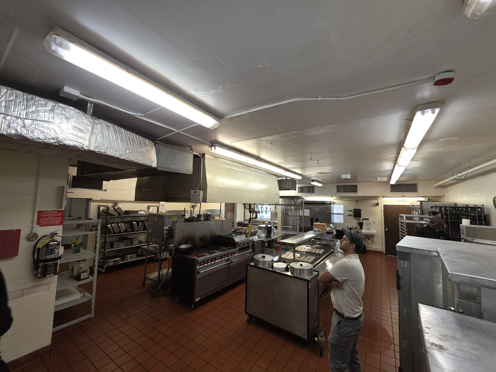
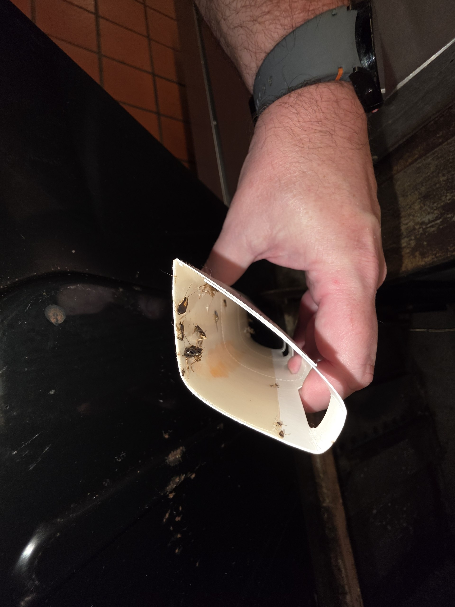
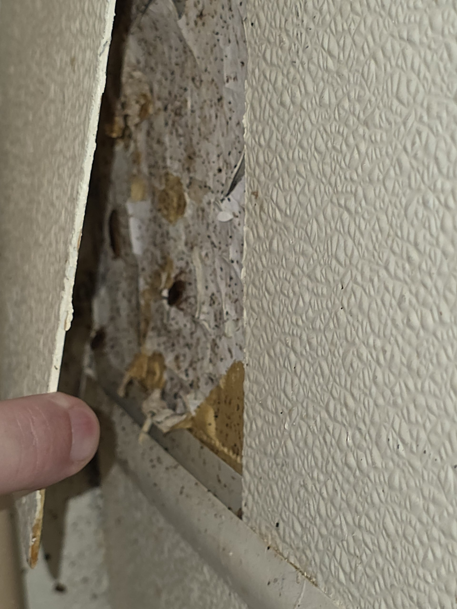
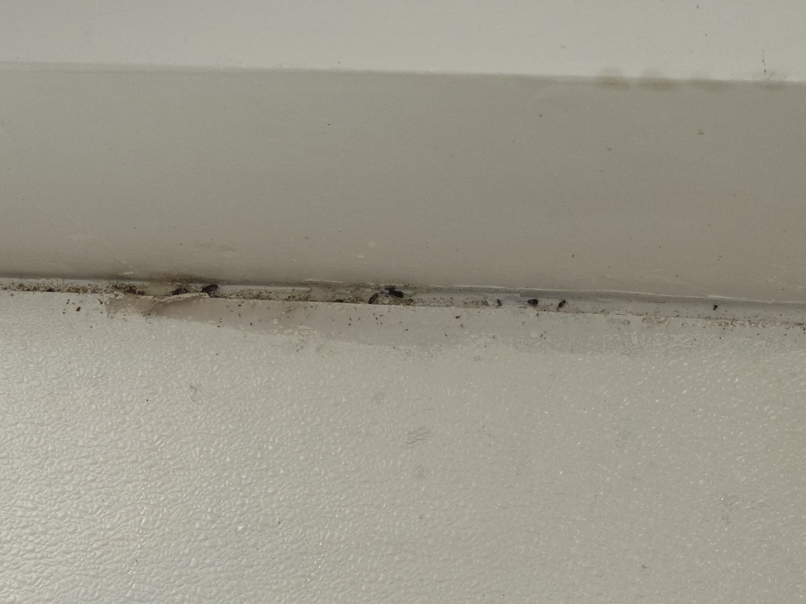
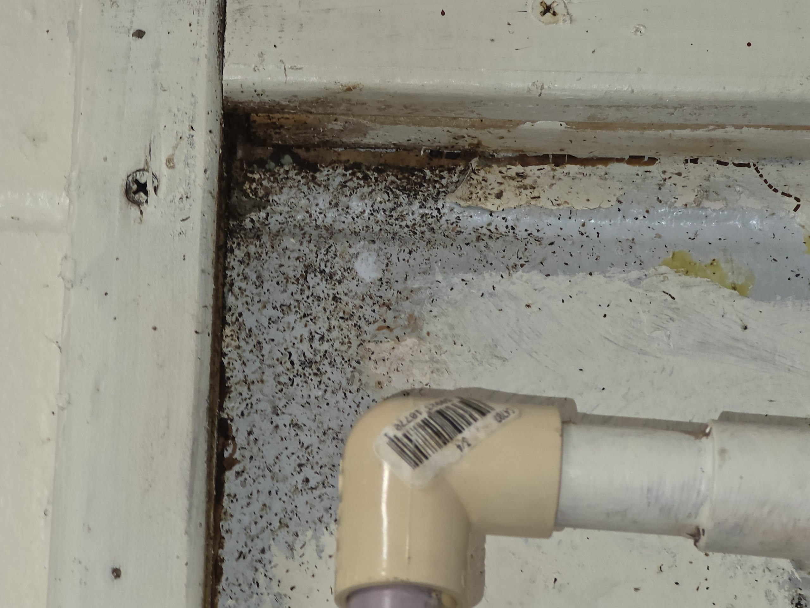
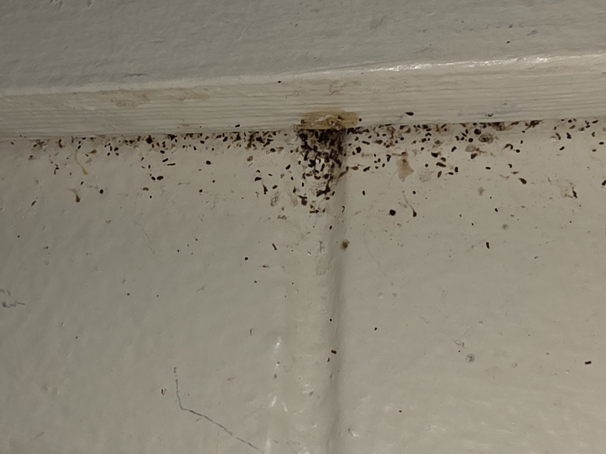
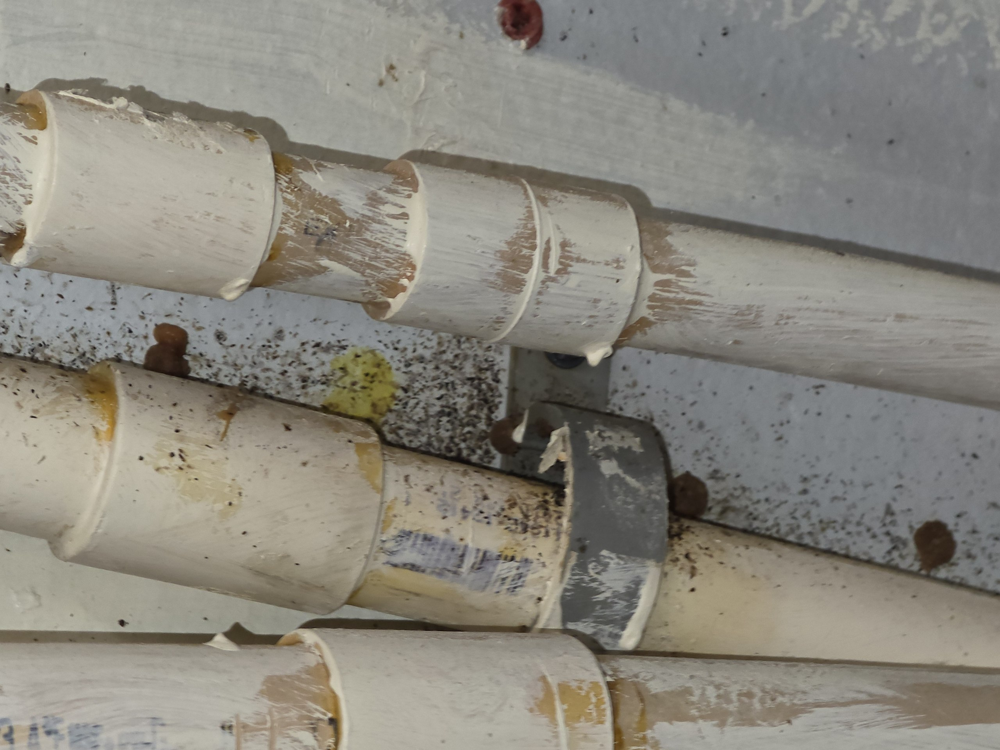
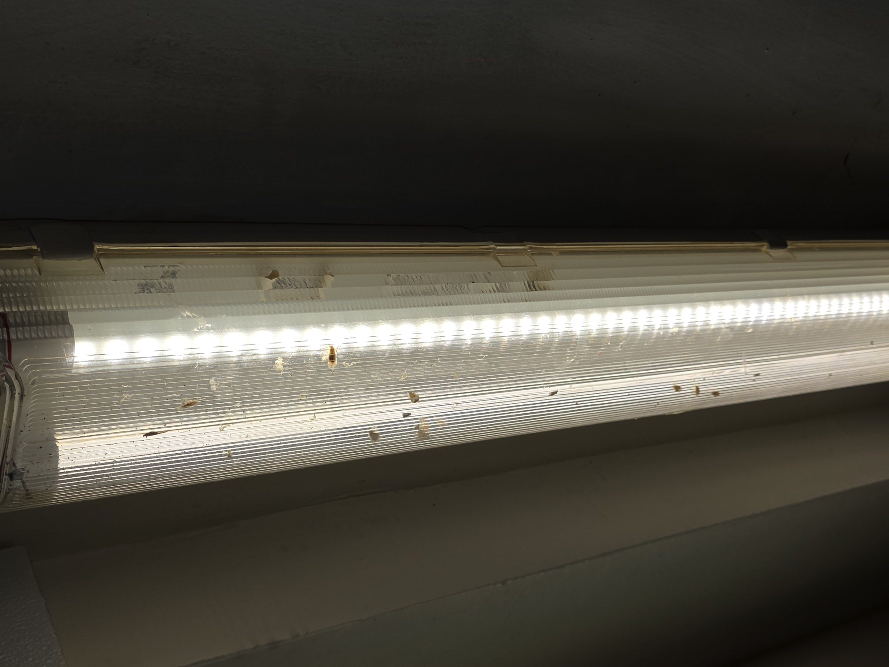

Service Overview
On the evening of June 2, 2026, Pest Pro LLC performed an emergency German cockroach cleanout treatment in the dietary kitchen at the Rehabilitation and Nursing Center of Winter Park. This service was authorized by Thomas Schnell and Martin Jacobowitz and was conducted after-hours to minimize disruption to facility operations.
Prior to treatment, a thorough inspection of the dietary kitchen was conducted to identify active harborage sites, population concentration points, and conditions contributing to the infestation. Treatment was then applied targeting all identified harborage areas using a multi-product protocol specifically formulated for food-service environments.
Inspection Findings
The inspection confirmed the presence of an active, established German cockroach (Blattella germanica) infestation throughout the dietary kitchen. Evidence of infestation was documented across multiple areas of the kitchen, including plumbing and mechanical spaces, wall-to-ceiling junctions, electrical fixtures, and equipment voids.
Key findings from the inspection included:
- Plumbing and pipe bundle areas: Significant harborage and frass accumulation documented throughout plumbing infrastructure, pipe bundle runs, and pipe mounting hardware.
- Wall and ceiling junctions: Active harborage confirmed at multiple wall-to-ceiling junction points throughout the kitchen perimeter, with heavy frass accumulation observed at each location.
- Electrical and lighting fixtures: Live insects observed harboring within fluorescent light fixture housings — a common harborage site where warmth creates ideal conditions.
- Interior wall voids: Active infestation confirmed within accessible wall void spaces, with live insects, frass, and oothecae observed upon inspection.
- Equipment areas: Frass accumulation and harborage evidence documented throughout areas adjacent to and beneath kitchen equipment, including the exhaust hood system.
- Oothecae (egg cases) present: Active reproductive evidence observed at multiple harborage sites, confirming an ongoing breeding population within the kitchen environment.
Glue monitors were deployed during the inspection process. Capture counts confirmed a high level of active cockroach pressure throughout the kitchen area consistent with the harborage evidence observed during the structural inspection.
Treatment Applied
A comprehensive, multi-product treatment protocol was applied throughout all identified harborage zones. Products were selected for their efficacy in food-service environments and applied in accordance with all applicable label directions and state licensing requirements.
| Product | Type | Application Method | Target Areas |
|---|---|---|---|
| Alpine WSG | Wettable Powder — Water-Soluble Granule | Applied to harborage sites, wall/ceiling junctions, and void spaces | Perimeter wall junctions, pipe runs, structural voids |
| NyGuard IGR | Insect Growth Regulator — Pyriproxyfen | Applied in conjunction with Alpine WSG; disrupts insect development cycle and prevents nymph maturation and egg viability | Applied to all Alpine WSG treatment zones throughout the kitchen |
| Doxem NXT | Broad-Spectrum Aerosol Insecticide — 4 Active Ingredients / 4 Modes of Action | Crack and crevice aerosol application into harborage zones, voids, and structural gaps | Pipe bundle areas, equipment voids, wall crevices, inaccessible harborage points |
| CB-80 Extra | Aerosol Contact Insecticide | Directed application into cracks, crevices, and void spaces | Structural voids, wall crevices, inaccessible harborage points |
| Advion Roach Bait | Gel Bait (Indoxacarb) | Spot applications in high-activity zones and harborage locations | Wall ledges, fixture areas, plumbing harborage sites |
| Avert Dry Flowable | Dry Flowable Cockroach Bait Powder | Applied into void spaces and inaccessible harborage areas | Wall voids, plumbing chases, structural cavities |
Photo Documentation
The following photographs were taken during the inspection and treatment of the dietary kitchen on June 2, 2026. Images document harborage sites, infestation evidence, and treatment application points observed during this service.








Next Scheduled Service — Preparation Required
The second phase of treatment is scheduled for Sunday, June 7, 2026 from 9:00 PM to 11:00 PM. This service will include a ULV (Ultra-Low Volume) fogging treatment as part of the continued treatment protocol.
Action Required Prior to Service: To prevent possible chemical contamination, all dishes, food items, and seasoning containers must be either removed from the kitchen or carefully covered and sealed before the service window begins. This step is required for safe and effective application of the fogging treatment.
Project Treatment Schedule
This engagement is a defined treatment project consisting of three to four scheduled service visits targeting complete remediation of the German cockroach infestation in the dietary kitchen. Each visit will build on the prior treatment, with product rotation and monitoring assessments conducted at each service.
| Visit | Date | Service | Status |
|---|---|---|---|
| Visit 1 | June 2, 2026 | Emergency cleanout — full product application throughout kitchen harborage zones | COMPLETE |
| Visit 2 | June 7, 2026 · 9:00 PM – 11:00 PM | ULV fogging treatment — second phase application | SCHEDULED |
| Visit 3 | Week of June 14, 2026 | Follow-up treatment — population assessment and continued application | Pending |
| Visit 4 | On or before June 28, 2026 | Final treatment — closeout inspection and remediation confirmation | Pending |